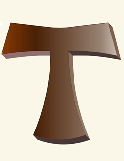
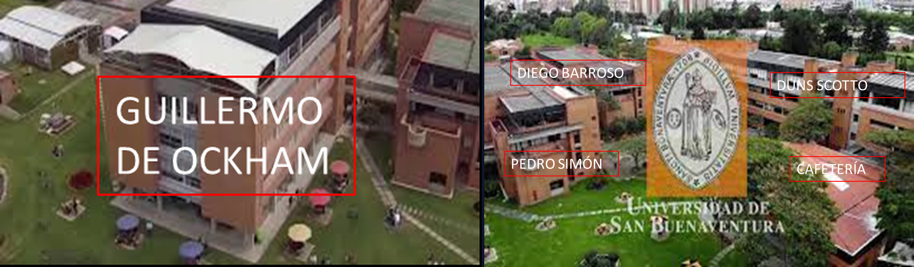

Descubre un mapa curricular dinámico articulado entre la Especialización en Evaluación y Diagnóstico Neuropsicológico (28 Créditos) y la Maestría en Neuropsicología Clínica (52 Créditos) con formación práctica directa en nuestro CAP Fray Eloy Londoño.
Selecciona el programa académico para visualizar la distribución de materias por semestre. Haz clic en cualquier asignatura o círculo de crédito para explorar sus competencias.
Presentación e integración clínica continua a lo largo de todos los semestres del posgrado (1 CR en S1, S2, S3 y 2 CR en S4).
Inmersión clínica progresiva en el CAP Fray Eloy Londoño (3 CR en S1 y S2; 2 CR en S3 y S4).
Evolución del nivel de autonomía clínica del estudiante desde el diagnóstico observacional hasta la intervención rehabilitadora avanzada.
Instalaciones modernas diseñadas para la atención asistencial, la investigación neuropsicológica y la docencia práctica.

El CAP Fray Eloy Londoño es el centro asistencial docente universitario donde nuestros estudiantes de posgrado realizan la atención clínica supervisada a pacientes con diversas patologías neurológicas y del neurodesarrollo.
Comunícate directamente con la Dirección de Posgrados, Coordinación de Prácticas, CAP e Investigación.